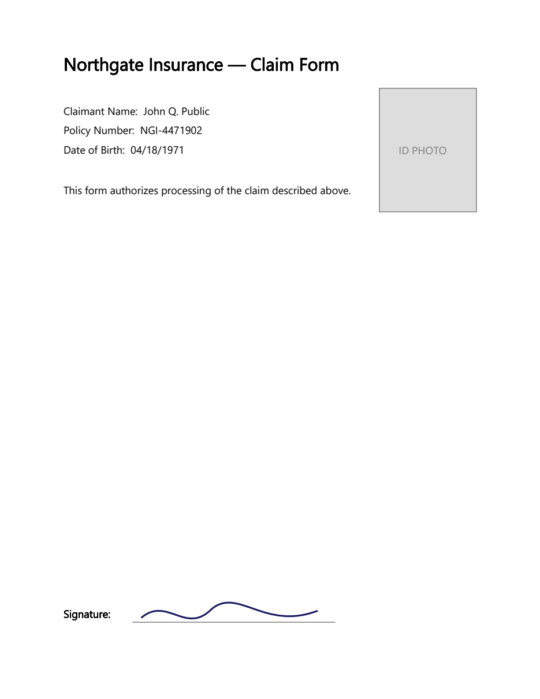

Philter Desktop redacts PDF files that end in .pdf.
How PDF redaction works
When Philter Desktop redacts a PDF, it turns each page into a flattened picture of the page with the sensitive information painted over. The removed information is truly gone: there is no hidden text layer left behind that someone could copy, search, or recover, unlike "redacted" PDFs whose black boxes can be copied off to reveal the text underneath. The trade-off is that the cleaned-up PDF behaves like a scanned document: you can read it and print it, but you can no longer select or search its text.
Because each item is simply painted over with a solid box, your filter strategy choice (the replacement text) does not change how a redacted PDF looks: PDFs always get solid boxes.
Scanned PDFs
Some PDFs are just pictures of pages (for example, a document that was scanned), with no real text inside for Philter Desktop to detect. When the Read scanned PDF pages with OCR option is on (it is by default), it recognizes the text on scanned pages on your own computer (nothing is uploaded) so the sensitive information can be found and removed. OCR is slower and is best-effort: it can miss low-quality scans and does not read handwriting, so reviewing the result matters even more here, and the Modify Redaction tools let you cover anything it missed. You can turn this off or fine-tune it on the Settings → PDF tab.
Text only — images are not detected
Philter Desktop finds and removes text — including the text OCR recognizes on scanned pages — but it does not analyze pictures. Faces, signatures, ID photos, logos, stamps, and other non-text images are not detected and will remain in the redacted PDF. If a document contains visual information that must be removed — for example, a photograph or signature on a scanned ID — review the redacted file and cover those areas yourself. When the sensitive area is always in the same place (as on a form or a standard ID), a PDF region can black it out automatically; see below.
Always blacking out a fixed area (PDF regions)
Sometimes the same spot on every page should always be covered — a signature block, a photo on an ID form, a letterhead logo, or a stamp — whether or not it contains text Philter Desktop can read. A PDF region is a rectangle that is always painted over when a PDF is redacted with that policy.
PDF regions are part of a policy. In the Policy Editor, click PDF Regions… to open the region list, then add regions in whichever way is easier:
- Draw on PDF… — the recommended way. Choose a representative PDF, then drag a rectangle over each area to cover. Every rectangle you draw stays outlined on the page, and you can move through the pages to mark areas on each. Drew one in the wrong spot? Right-click it and choose Remove Region. When you click Done, the regions you drew are added to the list.
- Add Region… — type a region's position and size directly (in PDF points, 1/72 inch, measured from the bottom-left of the page). Useful for fine-tuning or when you already know the exact coordinates.
Each region has:
- Pages — which pages the region covers. Enter a single page (
3), a range (2-5), a list (1,2,5, and mixes like2-5,8), or 0 for every page (handy for a footer, letterhead, or margin that repeats). A range or list stays a single row showing the pages as you entered them; when the policy is saved it's applied to each of those pages. Anything else is rejected with a message so a typo can't silently do nothing. - X, Y, Width, Height — the rectangle, in PDF points from the bottom-left of the page.
- Color — the fill color, chosen from a short list (Black, White, Red, Yellow, Blue, Green, Gray). It defaults to black.
In the region list you can double-click a region to edit it, or right-click any row for a menu with Add Region…, Modify Region…, Duplicate, and Remove. Add Region… is always available; Modify Region…, Duplicate, and Remove apply to the selected region (so they're enabled only when one is selected). Duplicate makes a copy of the selected region as a new one — handy for placing several similar boxes. Click OK to save the regions into the policy (they are stored with it, like the rest of the policy).
Because regions live in the policy, they apply to every PDF you redact with that policy — ideal for a fixed form or ID layout. To cover a one-off area on a single document instead, use Add Redaction (draw) while previewing that PDF. A region is painted as a solid box like any other redaction, so the covered content is truly gone, not just hidden.
Example: a form with a photo and a signature
Many documents put sensitive, non-text content in the same place every time. The example form below has an ID photo (top-right) and a handwritten signature (bottom). Neither is text, so OCR and detection can't find them — but both sit at fixed positions, which is exactly what a PDF region is for.

Download this example form and try it:
- Open (or create) a policy in the Policy Editor and click PDF Regions… → Draw on PDF….
- Choose the downloaded
claim-form-example.pdf. - Drag a rectangle over the ID PHOTO box, and another over the signature — each stays outlined so you can see what you've marked (right-click a rectangle to remove it).
- Click Done, then OK to save the regions into the policy.
- Redact the form with that policy. The photo and signature are painted over, along with the text the policy detects (the name, policy number, and date of birth).
Because the regions are stored in the policy, every form with the same layout is covered the same
way — you don't redraw them each time. For a form that spans several pages, enter a page range or list
(or 0 for all pages) so one region covers each page at once.
For adding files to the queue, previewing, adjusting, verifying, and reporting on a redaction, see Redacting Documents.